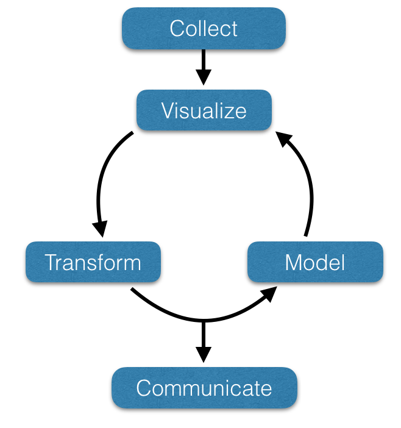

Synopsis
Data visualization is the key to understanding. We cannot, as a species, gain as much insight into biological phenomenon by looking at vast tables of values and data files as when we plot and visualize it. Increasingly, the amount of data and the rate at which we can accumulate it far exceeds our capacity to manually manipulate and examine it.
Moreover, simple summaries of our data can be misleading. A fundamental tool in your arsenal needs to be the ability to visualize your data. As shown in the graphic below, all those datasets have the same mean, variance, and correlation but are definitely different in composition!

This is why we need advanced tools and specific training to be able to wrangle these torrents of data into formats that serve our research, intellectual, societal, and personal needs. Learning to become agile in data analysis is the very heart of this course.
The following presentation (4:47 in length) was given by Dr. Hans Rosling (1948-2017) speaking about life income and expectancy for BBC. His body of research and enthusiastic methods for visualization set the stage for a much larger appreciation for dynamical visualization processes, particularly through the past decade. These are the kinds of ‘out-of-the-box’ presentation and discussion allows us to gain a much more fundamental understanding of our data.
Being able to attain, work with, visualize, manipulate, and analyze data is an absolutely necessary set of skills for all environmental and biological scientists. This course is designed to help you gain foundational skills and strategies necessary for you to grow as a data scientist. This course will include the fundamentals of data acquisition:
- Approaches for visualizing data.
- QA/QC and
- Applying specific models to data
- Communicating
This course is designed with the following general flow.

Once data are acquired, there is a cyclical process of visualization, transformation, and the application of statistical models. This cycle may proceed for extended periods of time, each time refining the way we look at, treat, and perform specific analyses. Eventually, this cycle leads to communication external to the data scientist, which is increasingly becoming more dynamic, as Dr. Rosling demonstrated above.
Within the general theoretical model, this course will explore, in order, univariate, bivariate, and spatial data types emphasizing the reticulate processes outline above. At the end of this course, it is expected that you will attain the skills as a data scientists, capable of working with environmental (and other) big data, forming the foundation for the rest of your graduate education.